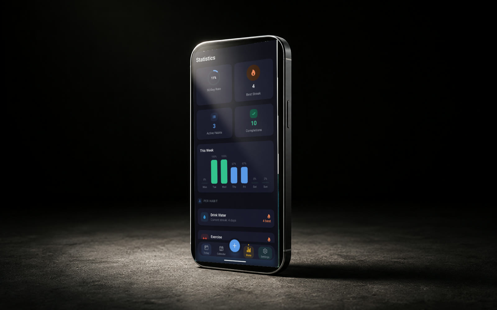

01
AI GouvernanceLLM API BENCHMARK
LLM API cost and accuracy benchmark associated with looot.ai. I evaluated provider accuracy, reliability, and cost efficiency against verified ground truth, using statistical testing and cost-per-correct-result analysis to assess ranking performance.